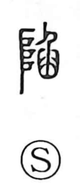

Explanation
Originally written 陷, this picto-phonetic character places the mound/boundary radical beside a phonetic that supplies the on-reading kan. Its ancient image is of a deep, mortar-like pit into which a person has dropped from above, hence the sense to fall in and, by extension, to cause someone to fall in, to entrap. 阱 names such a falling trap for animals. In early sacred imagery, 自 (in its archaic form) depicts the ladder by which the gods ascend and descend; in that setting, 陥—seen in compounds like 陥阱—refers to the pit excavated before the divine ladder to guard the sacred approach. A number of other characters with the same radical likewise portray measures for protecting this precinct: 限 driving off bearers of the evil eye, 隈 setting up a ghost-head effigy, 隣 crucifying a trespasser to release a will-o’-the-wisp, and 隔 marking off the space by placing a tripod vessel. 陥 thus belongs to this complex of boundary-guarding signs.